Direction 4 · organized by what changed since you looked
Gazette
News, and the pastOffice · Threads · Front PageTuesday 29 September 2026
The morning paper of your agents.
Every thread keeps a mark of when you last looked at it, and every turn ends with a one-line headline, written the way a title is. Put the two together and the overview becomes a newspaper of your work: the Wire lists what changed, like mail; Catch up walks it in order of importance; and when you come back after half an hour, a front page has been printed about your morning, with the four Requests that need your signature in a box on the right.
It answers the job nobody answers today: "I was away for 40 minutes. What changed, and what matters?" Today that is opening threads one by one.
09:41, back at the desk. The overview opens on the edition printed for your return. Stories new to you carry a dot; the Requests wait in the box on the right.
The huh
You come back from lunch, and the first thing you see is a newspaper written about your morning.
Not a feed and not a dashboard: a ranked, edited front page. The outcome that matters most is the lead, set big, with a drawing of what happened. Everything that needs you is in one box, and one tap signs it.
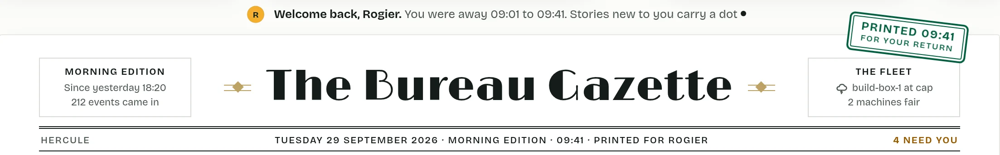
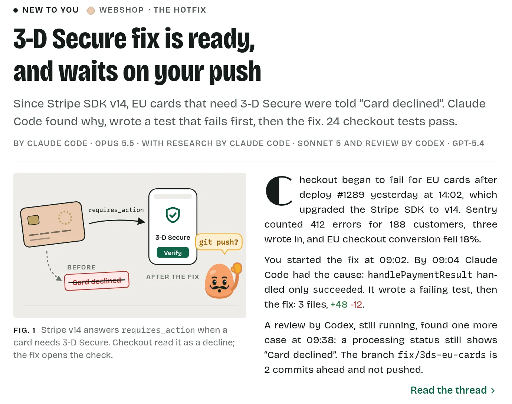
The lead. The edition's one Text Generation ranks the morning and writes the headline. The figures in the text are the world's: 412 errors, 188 customers, 24 tests.
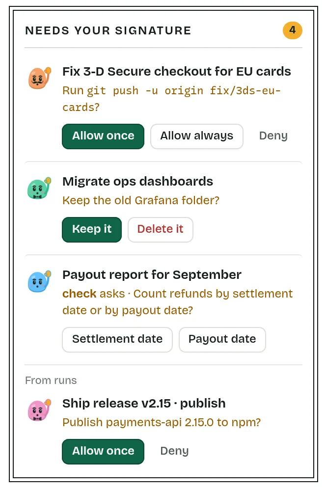
Needs your signature. Every Request, with its answers. Signing one leaves it in place, struck through, with Undo.
Three modes, one idea
Office, Threads and Front Page all sort the work by what changed since you looked.
The overview opens from the sidebar's Office button or ⌘⇧O. Its top bar switches modes with ⌥1⌥2⌥3 (⌘1 to ⌘9 belong to Go). A thread you select stays selected in every mode: its row lights in the sidebar, the camera flies to its bean, the paper marks its story. While the overview is open the sidebar stays the Wire: a click on a row selects that story in the overview instead of leaving it; ↩ or a double click opens the thread.
Threads · The Wire
Rows read like mail.
The sidebar is today's 52px row with one change: line 2 is the latest headline ("Review found 3 issues; 1 blocks"), not the machine. A story with news since you looked is bold, with an ink dot hanging in the margin; marigold stays for what waits on you. Sections: Needs you, News (newest first; still-working stories in regular weight) and Quiet (read and idle, a little dimmer).
Only Needs you is counted. There is no unread badge anywhere: Quiet is not a debt. A lone thread with nothing new costs nothing: same height, same words, just its last headline.
JK walk the stories↩ openE DoneS snooze until something newC Catch up
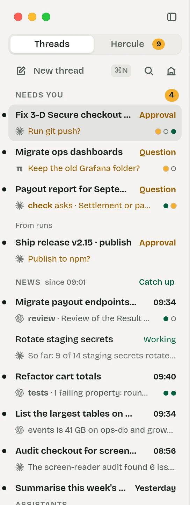
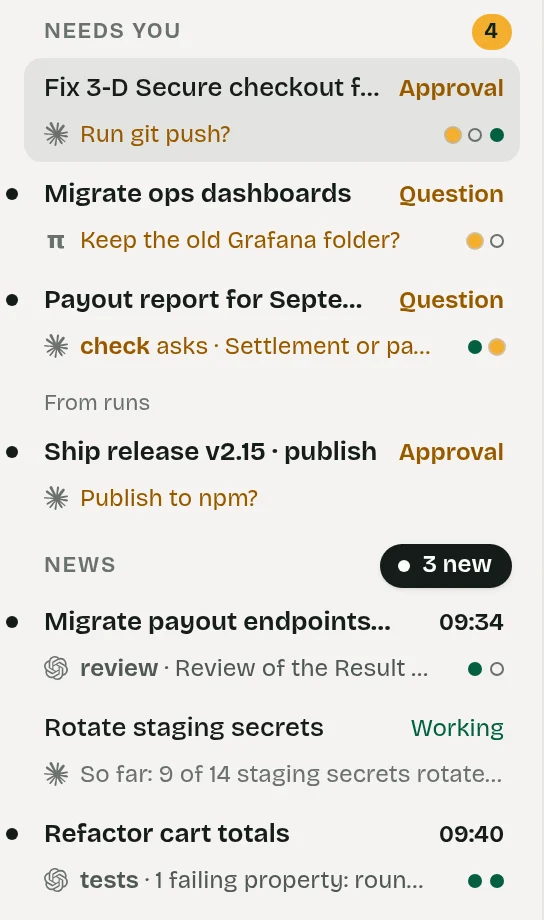
Nothing moves under the pointer. Stories that end while you hover wait in a "3 new" pill in the News header, where they will land.
Threads, full width · the reading pane
The story of one piece of work, since you looked.
Full width, the Wire becomes an inbox with a reading pane. Pick a story and the pane tells it: the edition's headline, the ask with its answers, every headline and report since your mark with its time and a link to its source, the message that matters quoted, and the diff. "Next story (J)" names what comes next.
Catch up (C) walks every story that matters, most important first: what waits on you, oldest ask first; then blocking findings, failures, outcomes. A strip reads "Story 4 of 9" with the clock running.
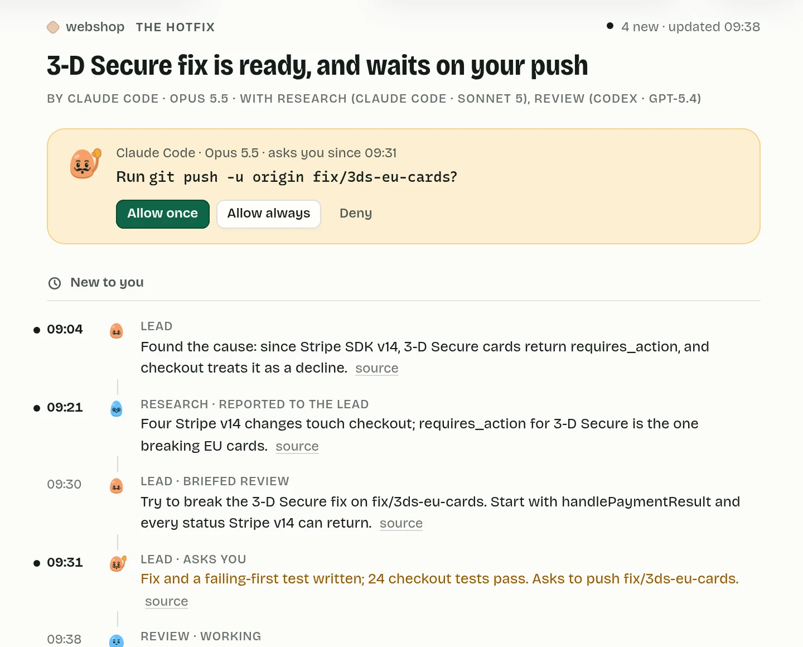
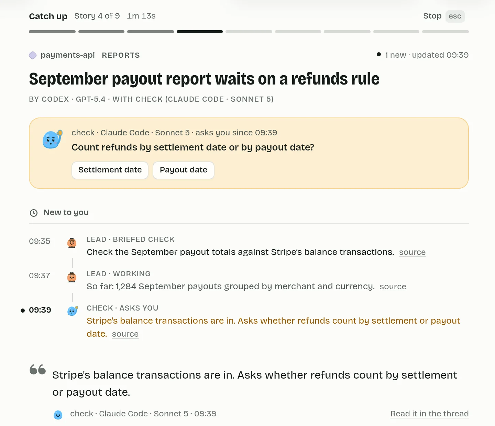
Catch up, part way. Three Requests answered, the fourth asks how to count refunds.
The end of Catch up
"You're caught up", and it is true.
The end card says how many stories and how long it took, what you did with them, and what will likely need you next, as a prediction with a range. If a Request is still open, the card lists it under "Still waiting on you" instead of pretending you are done.
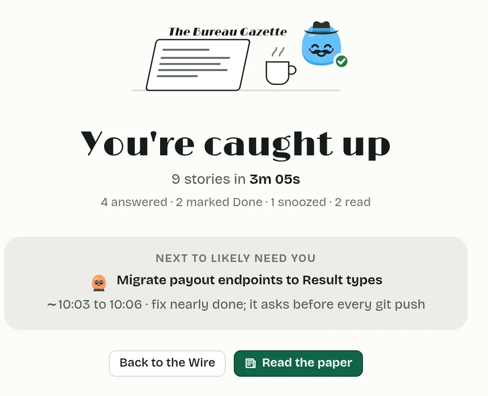
Front Page · The Bureau Gazette
A real front page, in Crew Bureau.
A masthead in Limelight between brass rules, a dateline, the lead with a drawn figure and a drop cap, and Needs your signature above the fold. Below it: a section front per project, In brief, Figures of the morning (tokens counted, with Codex "not reported"; tests; PRs; lines), Corrections (failures, reverts, and a story the evening edition got wrong), Weather (the fleet: build-box-1 at cap) and Later today, and tomorrow.
Every story links to its thread: a click selects it, a double click or "Open thread" opens it. An edition is printed when you come back after 30 minutes, or when you press Print now; old editions are kept ("Yesterday evening 18:20").
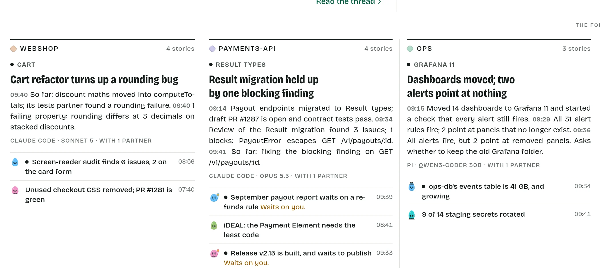
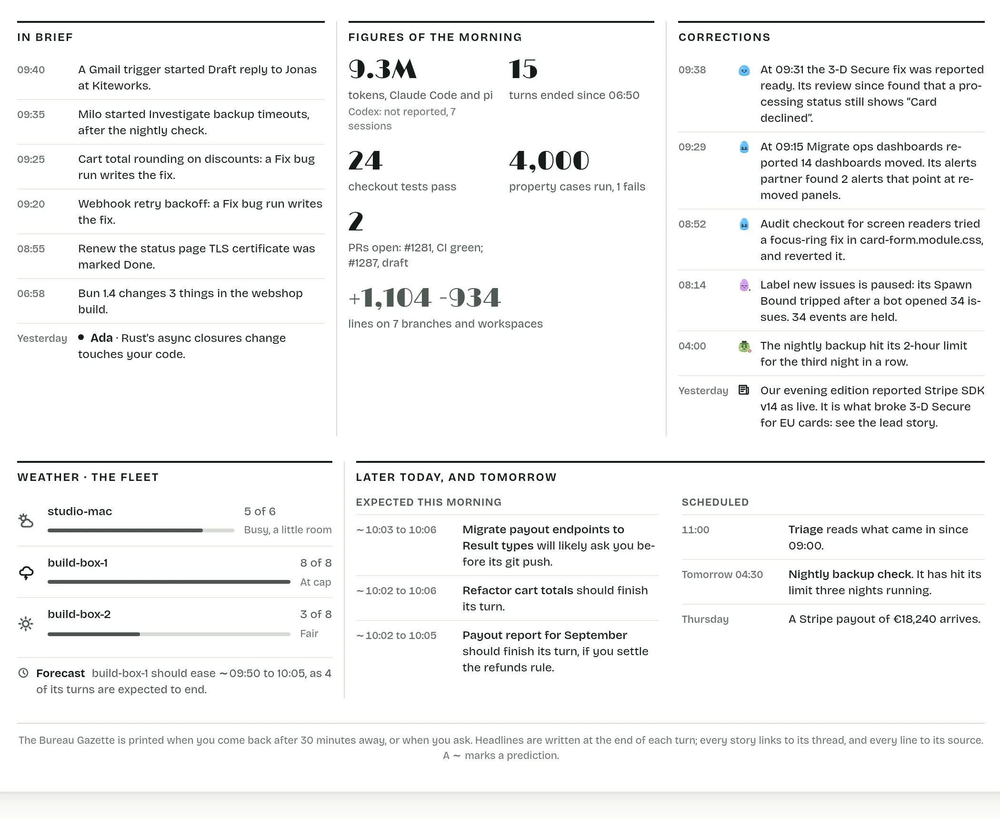
Honest figures. Counted from the world, never written by a model. A prediction carries a ~ and a range.
Office · the Bureau, rewindable
The Bureau remembers the morning.
It is today's Bureau, built from the app's own Office kit: a room per project along the Gallery, the Lounge, the Secretariat, Your Office with the beans that wait on you queued at your desk, and the Lobby. Three new layers make it tell the news. Drag the time dial from 07:00 to now and the Bureau replays the morning from the turn history, while a wire of captions above the dial reads out what happened.
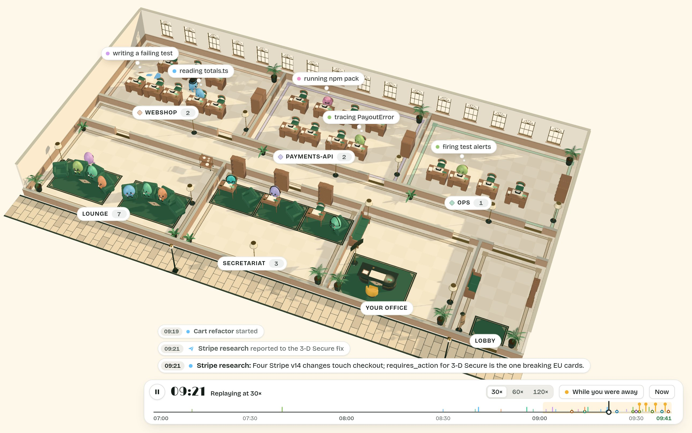
09:21, replaying at 30x. The past is drawn in a light sepia and the Lobby's longcase clock keeps the dial's time. The Stripe research has just reported to the 3-D Secure fix: its paper plane is in the air, and its headline is on the wire.
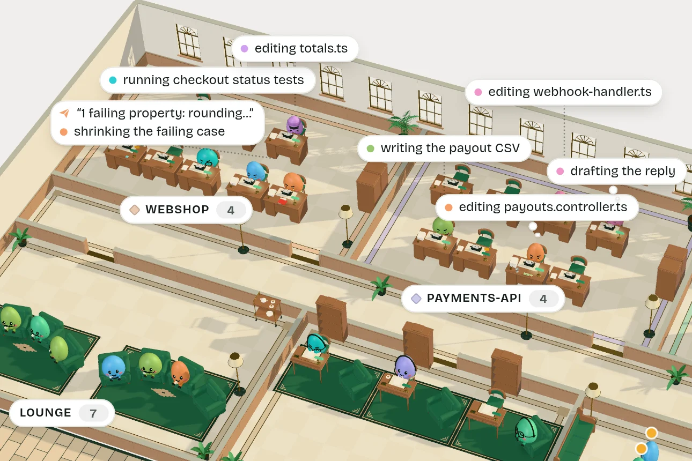
Thought bubbles. What each bean does now, in a few words, from its latest tool call. A message between threads flies desk to desk as a paper plane, and its first words wait in the receiver's bubble.
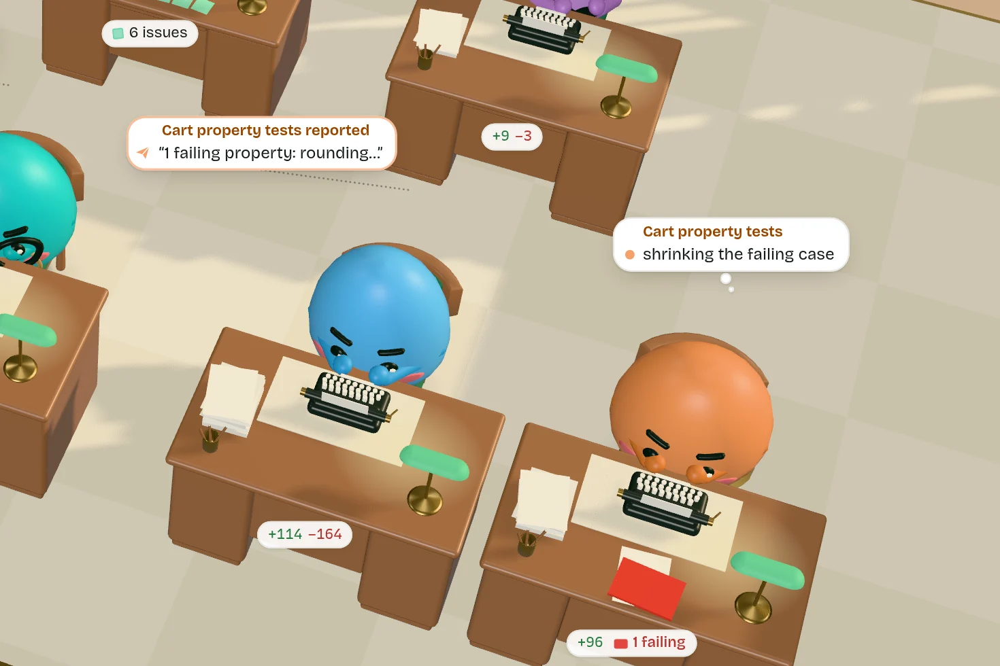
Desks remember the day. A ream grows with the diff, sticky notes land in the finder's colour, a brass cup stands for an open PR, a red folder for a failure. Close up, each desk says it in words.
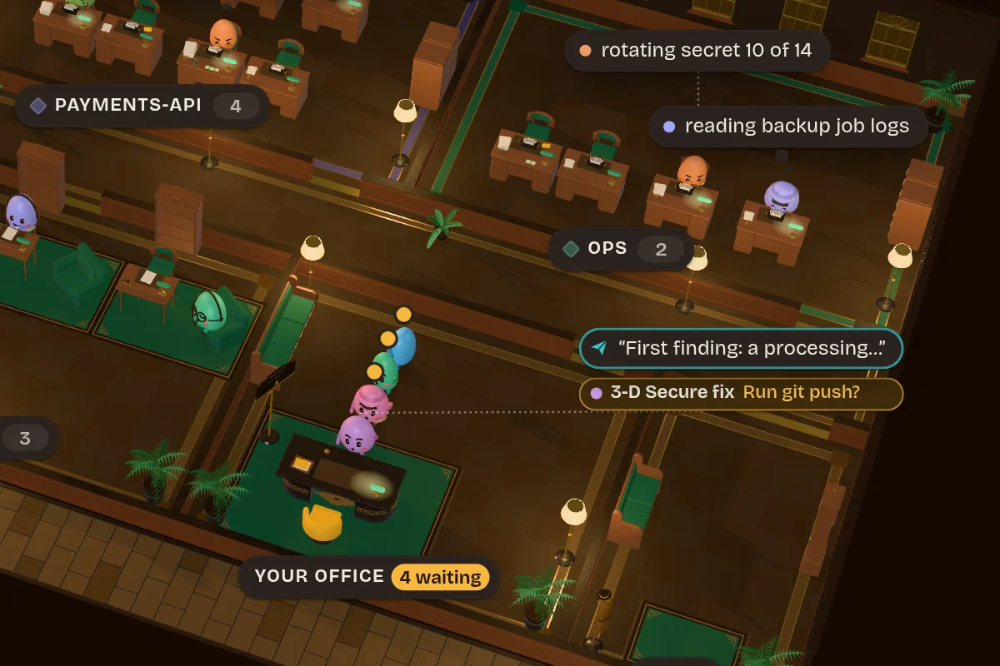
Orient Express. The same morning by lamplight. Every count agrees with the window: 4 waiting at your desk.
In the window
Back at 09:41, the newsboy has been.
In the away state a newsboy in a flat cap walks from the front door to your desk and puts down the 09:41 edition, the same paper the Front Page prints. Then the camera pulls back and 09:01 to 09:41 replays at 30x, with captions, and rests on now.
The selection card at the bottom left is the window's, shared by all three modes: pick a bean and the card shows its face, what is new, the ask with its answers, and Open thread. The dial starts where the card ends. Double-click a bean to open its thread; esc or the crumb flies home.
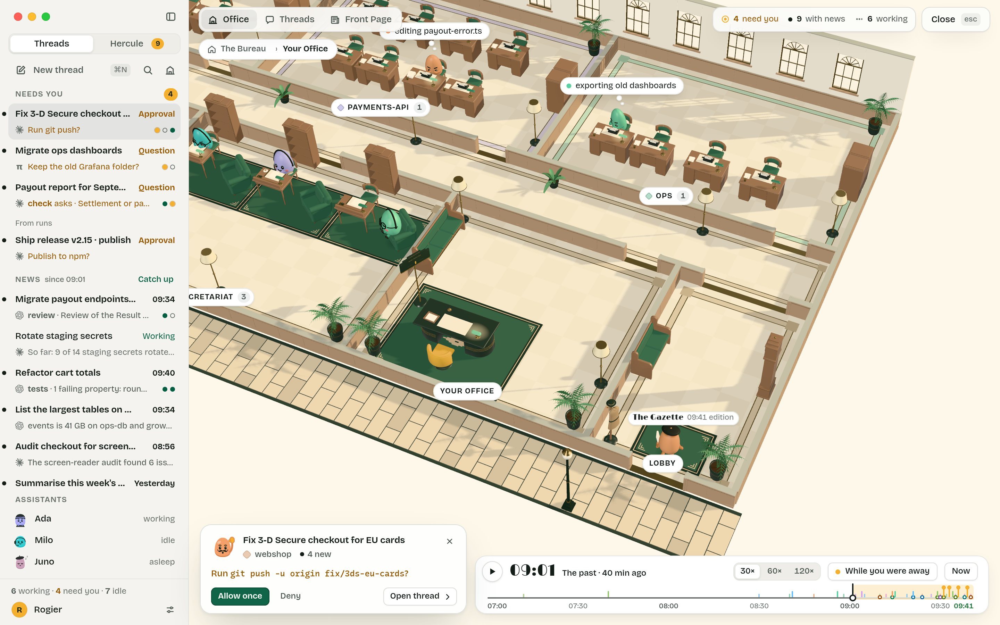
The newsboy, in the window. The dial has rewound to 09:01 and your desk is empty, as it was when you left; the newsboy comes in with the 09:41 edition. The sidebar and the card stay at 09:41.
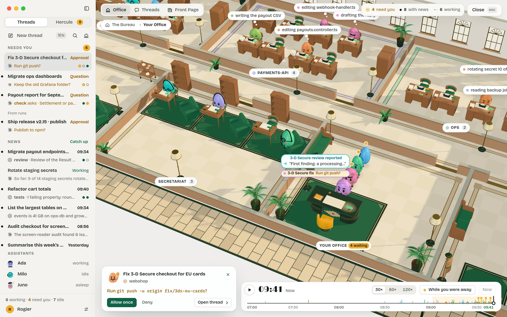
Selected in every mode. The thread picked in the sidebar is the bean the camera flies to: the 3-D Secure fix, first in the queue at your desk, with three more asks behind it.
A walk-through
Forty minutes away, three minutes to catch up.
Tuesday 29 September. Rogier steps away from his desk at 09:01. From his phone he starts four threads, the 3-D Secure fix first, at 09:02. He is back at 09:41.
09:41
The paper is on the desk.
The overview opens on the morning edition, stamped "Printed 09:41 for your return". The lead says what matters most: the 3-D Secure fix is ready and waits on your push. Nine stories carry a dot. In the Office, a newsboy has just put the same edition on your desk.
09:42
Three signatures, without leaving the page.
Allow once on the push. Keep the old Grafana folder. Allow the npm publish. Each answer is one tap, with Undo for five seconds; the signed Request stays in place, struck through, so nothing jumps.
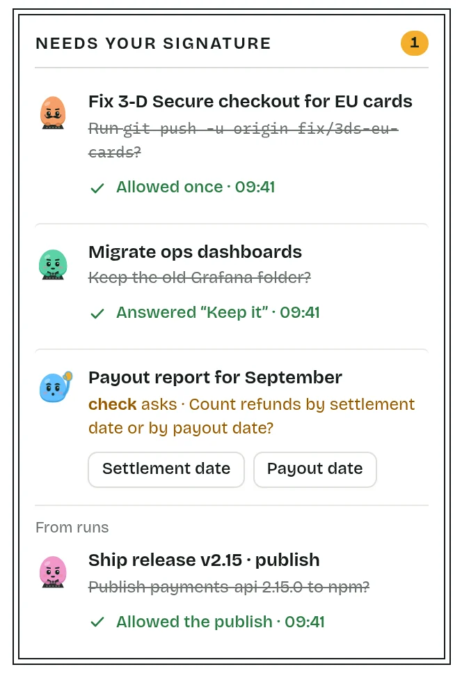
09:43
C for Catch up.
The Threads mode walks the rest in order. Story 4 of 9: the payout check asks whether refunds count by settlement date or payout date. One tap. J for the next: the Result migration's blocking finding, quoted, with its diff of 23 files.
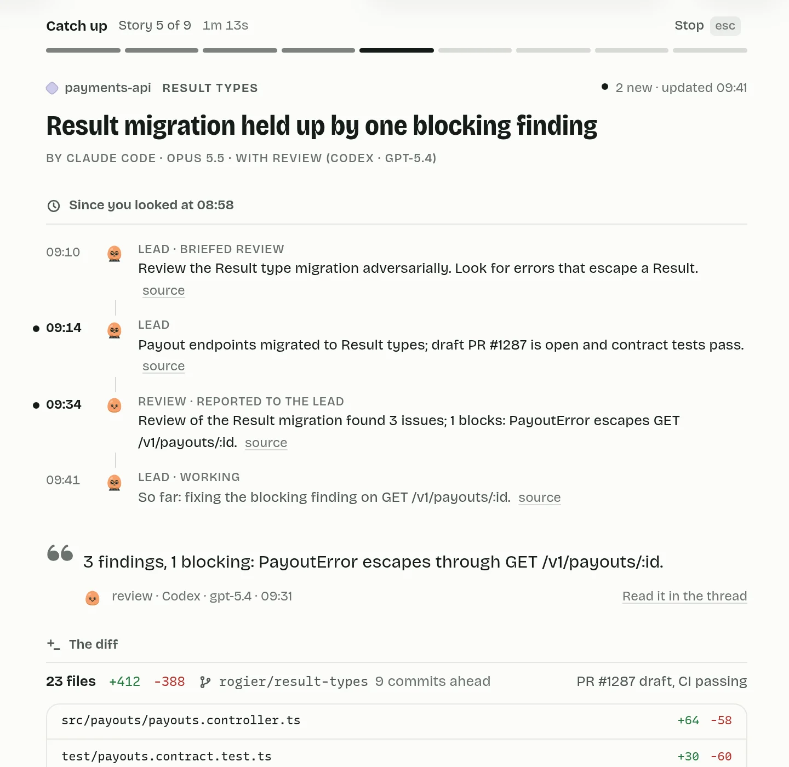
09:44
Caught up.
Nine stories in 3m 05s. The card says what comes next: the Result migration will likely ask before its git push, around 10:03 to 10:06. Rogier goes back to his own work.
09:51
News arrives quietly.
Three turns end while his pointer rests in the sidebar, the review of the 3-D Secure fix among them. They wait in a "3 new" pill in the News header and slide in when the pointer leaves, so nothing moved under it. The 3-D Secure row gets its ink dot back.
Later
Every line has a source.
Open a thread and each headline sits in the transcript, under the message it came from. A wrong summary is one click from the words it summarised, and the next edition prints a Correction.
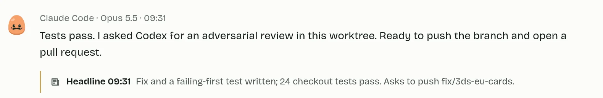
On the phone
A front page reads naturally on a phone.
On the Android app the Office tab gets a second view, Paper, beside the Bureau. One column: the masthead, the lead, then the box of signatures with thumb-sized answers, then the section fronts. It is the same edition the desktop printed, so it is ready when you open the app on the train.
9:41
Office
Printed 09:41 for your return
The Bureau Gazette
Tue 29 Sep · Morning · 09:41
New · webshop · The hotfix
3-D Secure fix is ready, and waits on your push
Since Stripe SDK v14, EU cards that need 3-D Secure were told “Card declined”. Claude Code found why, wrote a test that fails first, then the fix. 24 checkout tests pass.
By Claude Code · Opus 5.5
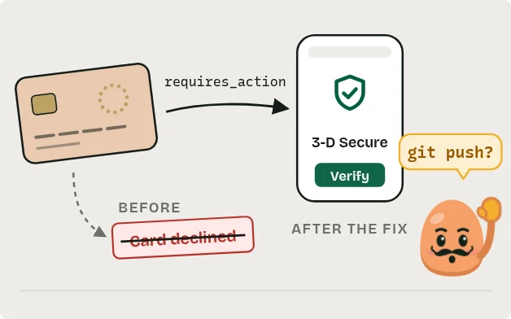
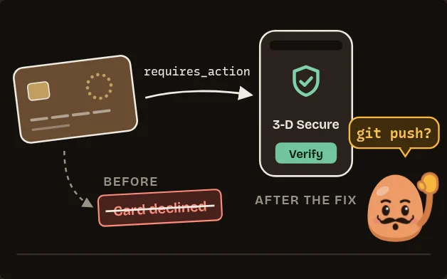
The top of the page. The lead and its figure fill the first screen.
9:41
Office
Needs your signature4
Fix 3-D Secure checkout for EU cards
Run git push?
Allow onceDeny
Migrate ops dashboards
Keep the old Grafana folder?
Keep itDelete it
Payout report for September
check asks · Settlement or payout date?
SettlementPayout
Ship release v2.15 · publish
Publish to npm?
Allow onceDeny
payments-api4 stories
Result types
Result migration held up by one blocking finding
09:34 Review found 3 issues; 1 blocks: PayoutError escapes GET /v1/payouts/:id.
One thumb signs the box. The answers are the desktop's, at 34 dp.
Holding up
On dark stock, in an older edition, and on a heavy day.
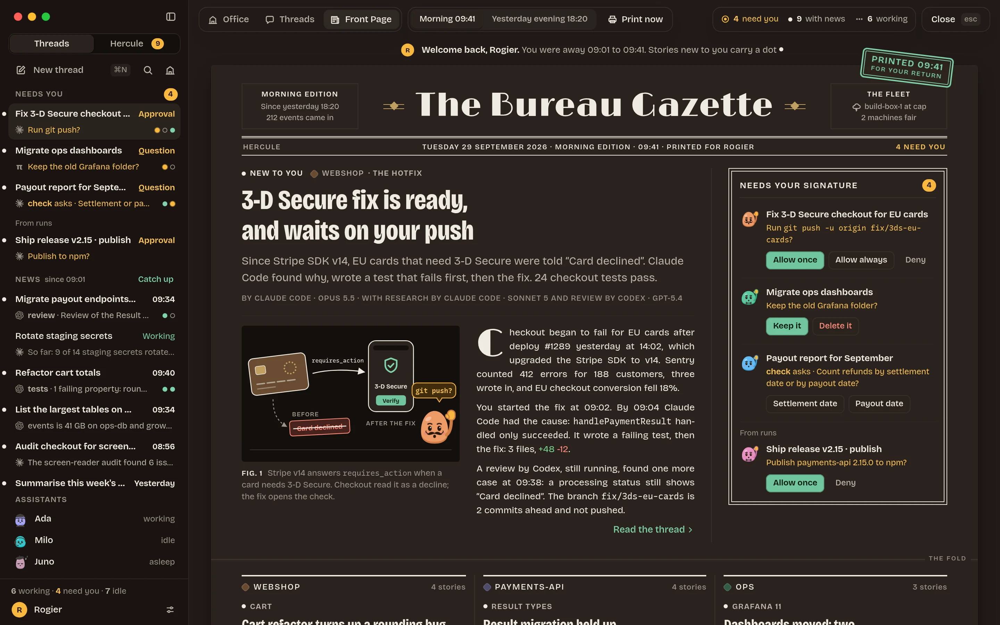
Orient Express. The paper is drawn from the theme's tokens, so the evening reads as well as the morning.
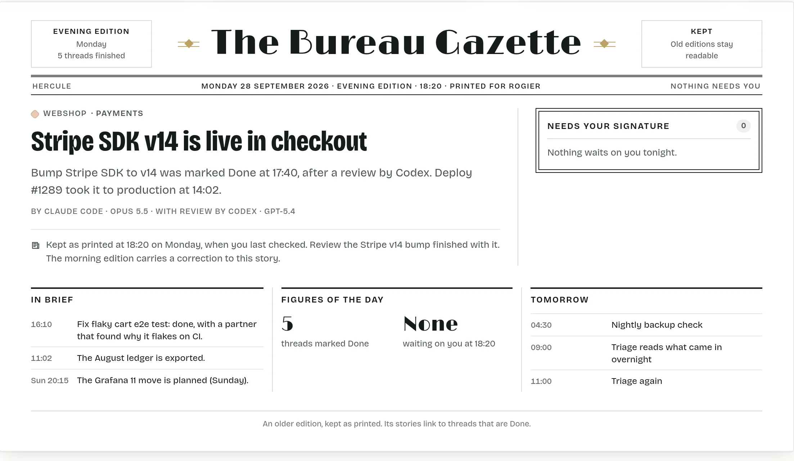
Yesterday evening, 18:20. Old editions are kept as printed. This one reported the SDK bump that broke checkout; the morning's Corrections say so.
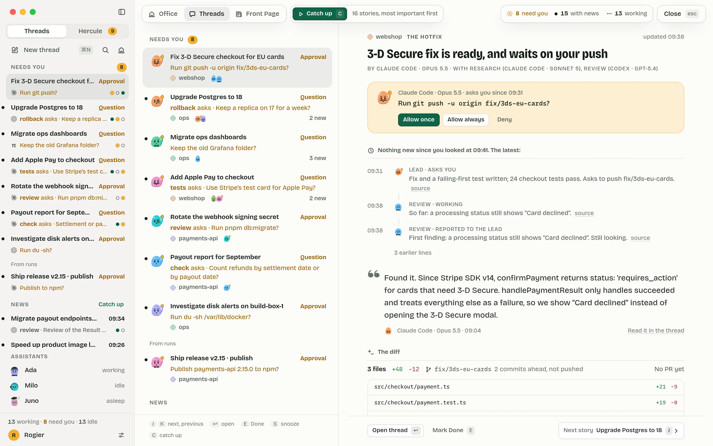
The swarm. Eight Requests rise to the top, oldest first; News and Quiet sort the rest, and 67 quiet threads fold into one line.
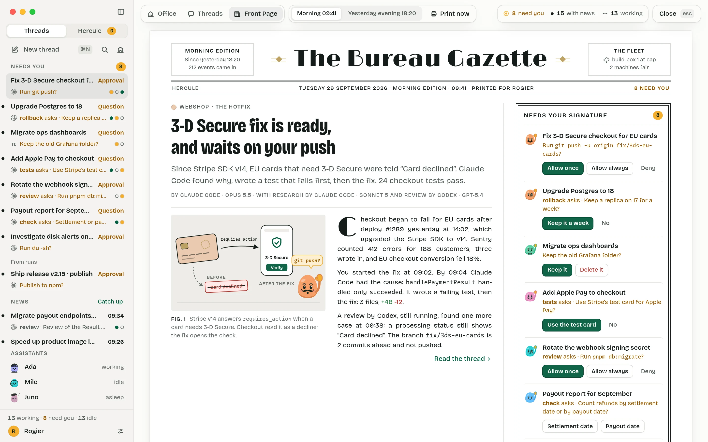
The swarm's paper. The lead stays the lead. The box grows, because what needs you always rises; the sections get more selective, not longer.
What Hercule would need
Two small records, two cheap calls, and nothing per token.
Gazette is built from what Hercule already keeps (turns, Requests, messages between threads, the diff) plus a few things it does not.
Need
What it is
Where it lands
A "since you looked" mark
Per user and thread: when you last had it open, on any device. Opening a thread, answering it, or reading it in Catch up moves the mark.
A small table; lastSeenAt on the Session's contract; synced to the phone.
A headline per turn
One plain sentence at each turn's end, written by a Text Generation the way a title is. A running turn may carry a "so far" line from its latest report or plan change.
Stored on the turn; read by the Wire, Catch up and the paper.
An edition
One Text Generation over the headlines since the last edition: a headline, kicker and rank per story. Figures are counted, never generated. Printed after 30 minutes away, or on demand; kept.
A new record, immutable once printed.
Answers on a question
The options a question offers (Claude's questions carry them; where an agent offers none, "Answer in the thread").
On the Request.
Snooze
Per user and story: hidden until the next headline.
Beside the mark.
For the Office
A current-activity line per busy session, read only while the Office is visible, and kept per tool call so the replay can show past minutes (the prototype's past lines are written by hand); the morning's turns by time, for the time dial.
Spec 18 turned the activity line down for the phone, for cost; here it is desktop-only and visible-only.
Words
Proposed for GLOSSARY.md: Headline (one line per turn), Edition (a printed front page). "News", "Quiet" and "Wire" are section names, not domain nouns.
GLOSSARY.md, spec 17 §The sidebar.
What it costs
Per token: nothing. The Wire redraws when a turn ends, a Request arrives or a thread is opened, never while text streams.
Per turn: one short Text Generation for the headline, on the cheapest model you choose; it can be switched off.
Per edition: one Text Generation over the headlines, when you return after 30 minutes or press Print now.
While idle: nothing runs. The paper is static; Catch up keeps a one-second clock only while it runs.
The Office: draws on demand and nothing while idle, except the kit's ambient breathing (capped at 30 fps, off under Reduce Motion). It pauses when another mode is shown. Bubbles are static text, rewritten only when their words change; the replay reads the turn history once.
What it changes elsewhere
The sidebar's line 2 becomes the latest headline. The branch moves to the reading pane and the thread's header.
The Waiting on you section is now Needs you, with the same count and the same "From runs".
Notifications can carry the headline instead of "turn finished".
The phone's Office tab gains a Paper view.
Risks, and answers
Summaries can be wrong.
Every headline links to the message it came from, and sits under it in the transcript. The paper prints Corrections, including its own. Numbers on the page are counted from the record, never written by the model.
Unread turns into email guilt.
Only Needs you is counted. There is no unread badge in the app icon, the tab or the foot. Quiet is not a debt, and S snoozes a story until it has something new.
Another place to look.
The paper is printed only when you come back after a while, or ask. The rest of the day the Wire is the sidebar you already use, one line richer.
The ranking feels arbitrary.
The rule is short and shown: what waits on you first, oldest ask first; then blocking findings, failures and outcomes. J and K walk any order you like.
Forty threads, forty headlines a morning.
The paper gets more selective, not longer: section fronts keep a top story and a few lines, and "and 31 quiet threads, nothing new" covers the rest. The swarm state shows it.
Open it
The live window, and every moment by link.
Best on a laptop, or on a phone held sideways: the window is a 1440 by 900 design.